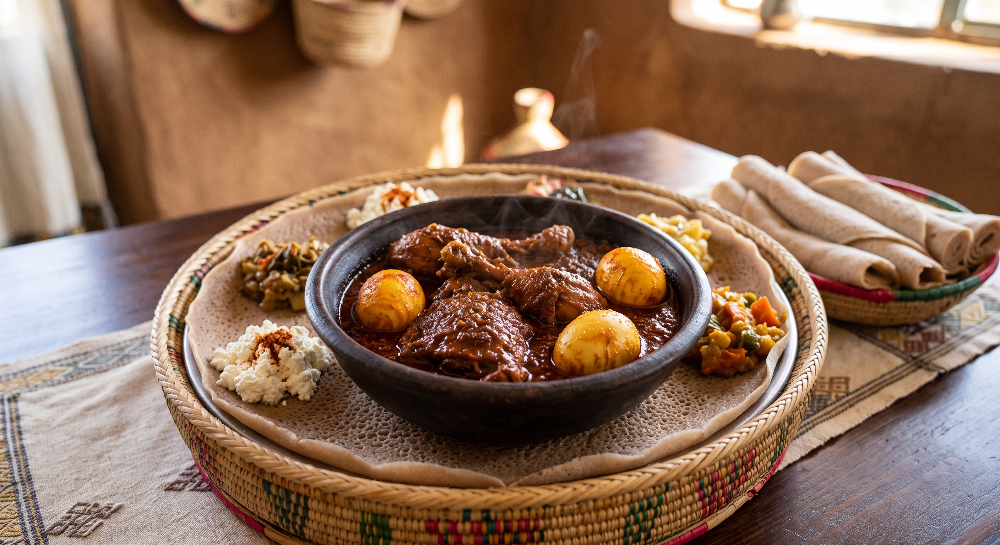

DORO WOT

Description
this is traditional ethiopian food made from chicken and other ingredients
Ingredients:
- 2-3 lbs chicken legs and thighs (skinless)
- 4-5 large red onions, finely minced
- 1/2 cup Berbere spice blend
- 1/2 cup Niter Kibbeh (Ethiopian spiced clarified butter)
- 4-6 hard-boiled eggs, peeled and lightly pierced
- 1 tablespoon fresh ginger, minced
- 1 tablespoon garlic, minced
- 1 to 2 cups water or chicken broth
- Salt to taste
Steps
- In a large, dry pot over medium-low heat, cook the minced onions for about 45 minutes, stirring frequently until they reduce and turn a dark caramelized color. Add a splash of water if they start to burn.
- Add the Niter Kibbeh, minced garlic, and ginger to the onions. Sauté for another 10 minutes.
- Stir in the Berbere spice blend and a small amount of water. Let the mixture simmer for 15-20 minutes to let the flavors meld.
- Add the chicken pieces and coat them thoroughly in the sauce. Pour in enough water or broth to just cover the chicken.
- Cover and simmer on low heat for about 40-50 minutes, or until the chicken is tender.
- Pierce the hard-boiled eggs slightly with a fork and gently stir them into the stew. Let them simmer for the last 5-10 minutes to absorb the sauce.